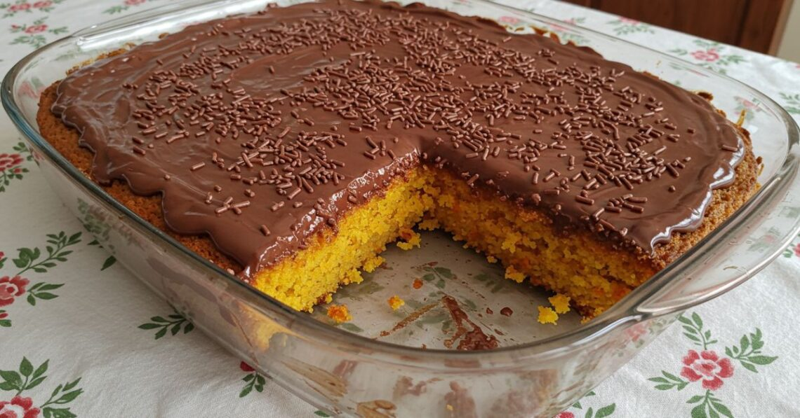

Bolo de cenoura
- ⏳ 1 hora
- 🍽️ 10 porções
- Fácil
Ingredientes
Modo de preparo
-
Pré-aqueça o forno e prepare a forma
Pré-aqueça o forno a 180 °C. Unte uma forma (com furo central ou retangular) com um pouco de óleo ou manteiga e polvilhe farinha de trigo.
-
Prepare as cenouras
Lave, descasque e corte as 3 cenouras médias em rodelas finas para facilitar na hora de bater.
-
Bata os ingredientes líquidos
No liquidificador, adicione as cenouras picadas, os 3 ovos e a 1 xícara de óleo. Bata bem por cerca de 3 a 5 minutos, até obter uma mistura homogênea e sem pedaços de cenoura.
-
Incorpore os secos
Em uma tigela grande, peneire as 2 xícaras de farinha de trigo e as 2 xícaras de açúcar. Despeje a mistura do liquidificador sobre os ingredientes secos e misture delicadamente com um fouet (batedor de arame) ou espátula até a massa ficar lisa.
-
Asse o bolo
Despeje a massa na forma preparada e leve ao forno pré-aquecido por aproximadamente 35 a 40 minutos. Para saber se está pronto, faça o teste do palito: espete um palito no centro do bolo; se sair limpo, pode desligar.
-
Sirva
Espere esfriar um pouco, desenforme e sirva puro ou com uma cobertura de chocolate por cima!